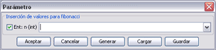
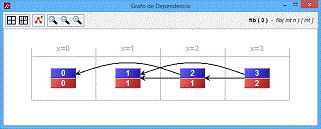

Para crear una nueva visualización, se debe activar la opción Archivo / Nueva animación una vez esté debidamente procesada la clase a la que pertenece. SRec mostrará un cuadro de diálogo que permitirá escoger un método de la clase.
|
Para ejecutar el método, la aplicación requiere que se introduzca por parte del usuario el conjunto de valores para los parámetros del método escogido. La aplicación da la facilidad de generar aleatoriamente uno, varios o todos los valores. También se permite la introducción de múltiples valores para cada parámetro separados por comas, o mediante rangos (x..y) lo que generará varias visualizaciones con todas las combinaciones posibles. Además, se podrán almacenar los valores para su posterior carga, evitando así tener que escribir los valores cada vez que se genera una visualización. |
 |
Es posible que no interese mostrar el valor de alguno de los parámetros durante la visualización. Para ello, el cuadro permite deseleccionar el parámetro o parámetros deseados, por lo que consecuentemente no aparecerá en la visualización. Al menos un parámetro debe permanecer seleccionado para su visualización. El usuario puede modificar durante la visualización qué parámetros se ven y cuáles no.
El cuadro de inserción de valores permite además cargar y guardar valores. Para cargar valores almacenados previamente, tan sólo es necesario pulsar el botón "Cargar" y seleccionar el archivo adecuado. Si el archivo guarda valores para otro método o no es un archivo válido, la aplicación lo advertirá debidamente. Para guardar los valores actualmente escritos en los campos de valores se debe pulsar el botón "Guardar" y ubicar el fichero en disco.
Una vez que se han introducido correctamente los valores para los parámetros, la aplicación ejecuta dicho método con los valores proporcionados, habilitando los paneles de visualización tras breves instantes.
En este punto, la visualización ya está generada y se puede utilizar y configurar con total flexibilidad.
También, para cada visualización activa, es posible generar un grafo de dependencia para visualizar las relaciones de dependencia entre las distintas llamadas de un determinado método
|
Los nodos del grafo de dependencia pueden arrastrarse libremente por el visor y las opciones presentes en la ventana permiten tabularlo manualmente o mediante expresiones, además permite configurar el nivel de zoom y realizar capturas en formato de imagen. |
 |
__________